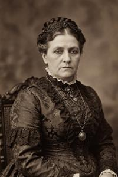
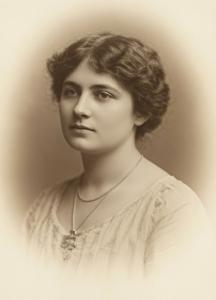

Дом Зорза - ЧЕРНОВИК
Бароны Зорза (згур. и дегл. Zorza, глаг. ⰈⰑⰓⰈⰀ) — один из древнейших знатных родов Бывшей Верхней Паннонии (БВП). Владея обширными редконаселёнными территориями в горах Нехожи Врехи, вдали от городов и торговых путей, они всегда держались наособицу и, за отдельными исключениями, не занимали государственных постов и не участвовали в политической жизни страны.
Ранняя история
Происхождение имени Зорза неизвестно. Совпадение с польским словом zorza "заря", скорее всего, случайно. Имя почти наверняка не славянское и происходит, по наиболее обоснованной версии, от имени "Георгий" в венецианском произношении (Дзордзо). Сами бароны Зорза считают, что их род обитает в Нехожих Врехах с доисторических времён и ведёт начало от племенных вождей дославянской или даже доиндоевропейской эпохи. В этой легенде может присутствовать зерно истины: геральдика и фамильные обычаи Зорза глубоко архаичны, а многие представители рода, наряду с христианским именем, носили и до сих пор носят странные вторые имена, не выводимые ни из какого известного языка.
В исторических источниках бароны Зорза впервые упоминаются с начала XII века как стойкие противники гегемонии бреговских князей-епископов, покровители Клыкова монастыря, который находился как раз на их территории, и защитники славянского глаголического богослужения. В середине XII века барон Гамильдо (Gamildo) Зорза возглавил сопротивление паннонских феодалов князю-епископу Миклошу (Miklosz); в 1347 году Крицо (Krico) Зорза был убит наряду с другими непокорными баронами в Виштицкой резне, организованной князем-епископом Бенедыктом (Benedykt) "Мясником". После османского завоевания Зорза остались в стране, в отличие от большинства местных дворян, и продолжали править у себя в горах как формальные вассалы султана. Пока равнинная Паннония опустошалась нескончаемыми австро-турецкими войнами, труднодоступные горы наслаждались покоем. Замок Зоржин (Zorzsin), главная резиденция главы дома, в XVII веке разросся до небольшого города, уступающего размерами только Кузгун-Калеси, столице санджака.
Во время Великой турецкой войны, когда Габсбурги отвоевали у Османов Венгрию и Верхнюю Паннонию, многие горные бароны выступили на стороне турок, но тогдашний барон Зорза, по имени Хелейтер (Heleiter), послал войска на помощь австрийцам. В награду он получили земли, конфискованные у протурецких баронов, и окончательно закрепил за своим родом первое по богатству и могуществу место в горной части страны. На протяжение всего XVIII века Зорза правили этими территориями как практически независимые владетели, при весьма формальной зависимости от военных властей в Рабенбурге. Здесь по-прежнему царили совершенно средневековые, а то и более древние, нравы и обычаи.
Геральдика, репутация и традиции
На гербе баронов Зорза в серебряном поле изображён так называемый пущерь (pusczerj), мифологическое чудовище в облике медведя с кабаньими клыками и бараньими рогами, держащее в лапе дубину. Латинский девиз "Time matiam meam" означает "бойся моей дубины". Герб был официально утверждён только в XVIII веке, но символика гораздо древнее: изображения пущеря с дубиной (или гигантским фаллосом) встречаются уже на петроглифах бронзового века.
Среди горожан и жителей равнины бароны Зорза имели стойкую репутацию варваров, простодушных и необузданных детей природы, преданных своим полуязыческим обычаям. Сами Зорза этот стереотип знали, любили и старались соответствовать. Единственными достойными мужчины занятиями в этом роду считались охота, застолье и война, причём под войной понимались скорее удалые разбойничьи набеги, чем служба в регулярной армии. Вплоть до самого упразднения Верхнепаннонской военной границы Бароны Зорза поставляли рекрутов и сами служили только в иррегулярных частях граничар. Охотой многие увлекались настолько, что вели едва ли не кочевой образ жизни, месяцами подряд скитаясь по лесам. Городскую жизнь, образованность, законопослушание и светские манеры было принято презирать; только с начала XIX века в эту семью стали проникать веяния просвещённого века.
Главы дома (с начала XIX века)
Иллезаро (Illezaro)
Себастыан (Sebastyan), второе имя Ливиено (1807-1869)
Петер (Peter), второе имя Сментро (Smentro) (1828-1887)
Велимир (Velimir), второе имя Смандредо (Smandredo) (1860-1918)
Чеслав (Czeslav), второе имя Армелетер (Armeleter) (1897-1947)
Тимоте (Timote) (1929-1999)
Самуэль (Samuel) (1960-2022)
Любомир (Ljubomir) (1993-)
Другие известные представители
Миклош (Miklosz), второе имя Мармелло (Marmella) (1838-1901)
Бранимир (Branimir), второе имя Татизио (Tatizio) (1932-1991)
Известные женщины


Ева, второе имя Илавия (Ilavia) (1840–1912), в 1856 году вышла замуж за Адальфрида Аттилу Брегови. Пока муж путешествовал — то есть почти всю жизнь, — она весьма эффективно управляла имениями Брегови, значительно приумножив состояние семьи. Домашняя тиранка, она полностью распоряжалась жизнью своего сына Отто Островита, включая выбор жены и политическую карьеру, и даже продолжала его пороть во взрослом возрасте.


Марта (1877–1946), двоюродная племянница Евы, была выбрана самой Евой в жёны сыну Отто Островиту. Она оказалась столь же деспотичной, и после смерти Евы точно такими же методами, включая порку, управляла мужем до конца его дней. Неудивительно, что оба её сына сбежали из дома при первой возможности — Световит, чтобы учиться скульптурному мастерству в Париже, а Дарислав — чтобы стать анархистом.
Лада -- жена Теодора Олещана
Категории: Черновики, Знать, История, Персоналии